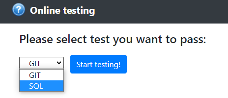
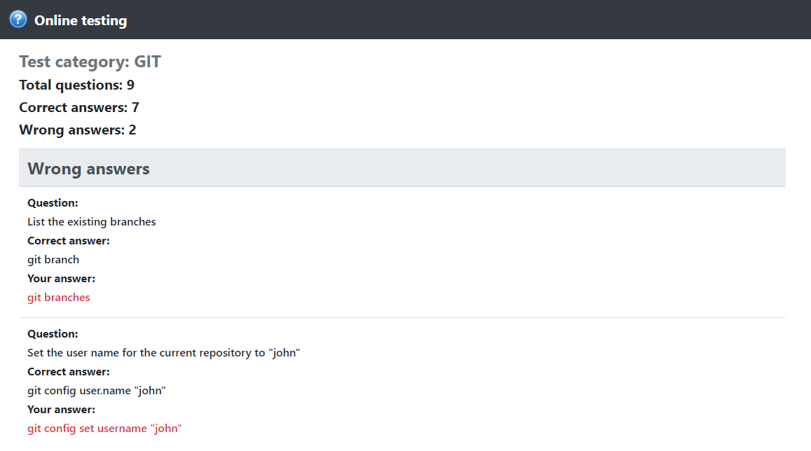

Использованные технологии
|
Maven Spring Boot Spring MVC Spring Data JPA (Hibernate) JUnit 5 Thymeleaf |
Описание приложения
Данное приложение позволяет пользователям проверить свои знания, пройдя онлайн тест по выбранной тематике.
Пользователю предлагается выбрать тему, по которой он хочет пройти тест, из списка имеющихся тем.
После выбора тематики теста начинается тестирование, где пользователю необходимо отвечать на предлагающиеся вопросы, выбирая правильный
ответ из представленного списка. В случае неверного ответа на вопрос информация об этом сохраняется.
Пользователь может в любой момент прервать прохождение теста и перейти к просмотру результатов, нажав кнопку "Interrupt test".

После ответов на все вопросы теста или досрочного завершения теста нажатием кнопки "Interrupt test" приложение представляет пользователю результаты выполнения теста. В случае если пользователь давал неверные ответы, программа выводит список соответствующих вопросов, а также отображает правильные ответы на эти вопросы совместно с неправильными ответами, данными пользователем.
